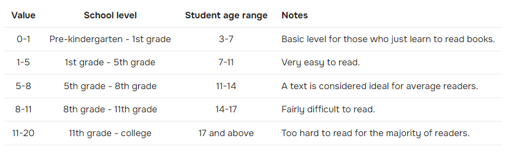
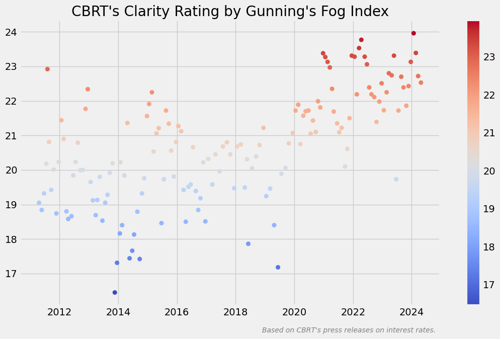
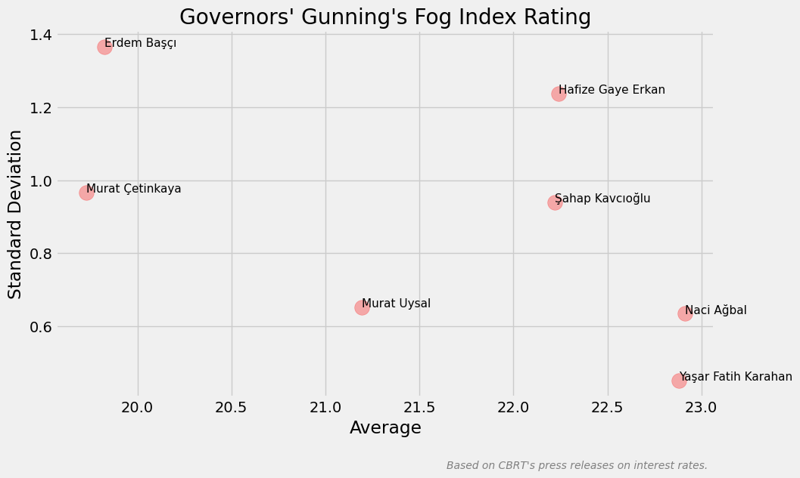
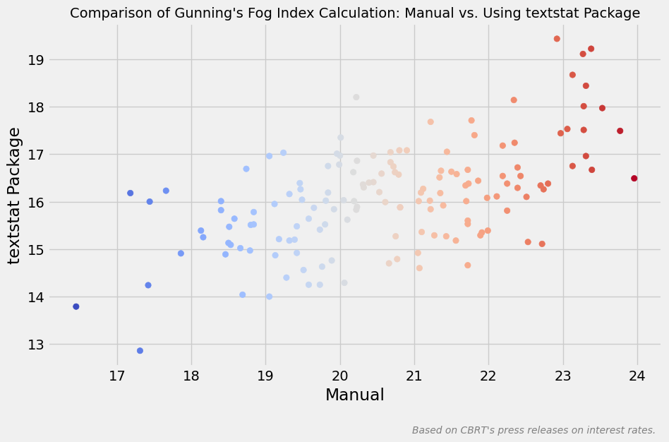

import pandas as pd
import re
import syllapy
import textstat
import matplotlib.pyplot as plt
plt.style.use('fivethirtyeight')Giriş
Okunabilirlik, bir metni okumanın ve anlamanın ne kadar kolay olduğunu ifade eder. Metinlerin okunabilirliği, bilgi iletişiminde kritik bir rol oynayabilir ve bir metin ne kadar açık ve anlaşılır olursa, o kadar etkili bir iletişim sağlanabilir. Bu bağlamda, Türkiye Cumhuriyet Merkez Bankası’nın (TCMB) faiz oranlarına ilişkin duyuru metinlerinin ve tabi ki diğer metinlerin okunabilirliği üzerine odaklanmak, hem finansal anlamda hem de genel olarak kamuoyuyla iletişim açısından önem taşıyabilir.
Bank of Canada (Kanada Merkez Bankası), Readability and the Bank of Canada başlıklı bir çalışmalarında, banka yayınlarının 2015-2017 yılları için okunabilirliğini incelemiş ve genel olarak banka yayınlarının normalde bankanın kitlelerinin tükettiği haber makaleleri ve diğer içerikler kadar kolay okunmadığını bulmuş. Ancak aynı zamanda bankanın uluslararasında iyi bir konumda yer aldığı sonucuna da ulaşmış.
Okunabilirliğini inceleyeceğimiz metinler burada, cbrt_press_releases.xlsx isimli excel dosyasında bulunmaktadır. Veri seti, Erdem Başçı ve Yaşar Fatih Karahan arası dönemlerde yayınlanan 148 adet İngilizce duyuru metnini kapsamaktadır. Son veri 2024 yılının Nisan ayına aittir.
Kullanılacak Kütüphaneler
Gunning’in Fog İndeksi
İndeks, 1952 yılında Gunning Fog tarafından geliştirilmiştir ve aşağıdaki gibi hesaplanmaktadır.
\(GFI = 0.4[(\frac{Total\ words}{Total\ Sentences}) + 100(\frac{Complex\ words}{Total\ words})]\)
Complex words ile kastedilen üç ve daha fazla heceli kelimelerdir.
İndeksin seviyeleri aşağıdadır.

Veri Setinin İçe Aktarılması ve Bazı Ayarların Yapılması
df = pd.read_excel('cbrt_press_releases.xlsx')
df['Date'] = pd.to_datetime(df['Date'], dayfirst=True)
df = df.sort_values(by='Date')
df = df.set_index('Date')İndeksin Hesaplanması
def gunning_fog_index(text):
pattern = r'(\b\d+)\.(\d+\b)'
text = re.sub(pattern, r'\1,\2', text)
text = text.translate(str.maketrans('', '', '\n\xa0'))
sentences = re.split(r'(?<=[.!?])\s+', text)
num_sentences = len(sentences)
words = re.findall(r'\b(?:[a-zA-Z]+(?:-[a-zA-Z]+)?|-)\b', text)
num_words = len(words)
avg_words_per_sentence = num_words / num_sentences
num_complex_words = sum(1 for word in words if syllapy.count(word) >= 3)
gfi = 0.4 * (avg_words_per_sentence + 100 * (num_complex_words / num_words))
return round(gfi, 2)
df['Gunning_Fog_Index'] = df['Text'].apply(gunning_fog_index)İndeksin Görselleştirilmesi
plt.figure(figsize=(12, 7))
plt.scatter(df.index, df['Gunning_Fog_Index'], c=df['Gunning_Fog_Index'], cmap='coolwarm')
plt.title("CBRT's Clarity Rating by Gunning's Fog Index")
plt.text(
0.99,
-0.1,
"Based on CBRT's press releases on interest rates.",
verticalalignment='bottom',
horizontalalignment='right',
transform=plt.gca().transAxes,
color='gray',
fontsize=10,
fontstyle='italic'
)
plt.colorbar()
plt.show()
İndeks değeri arttıkça okunabilirliğin zorlaştığını söyleyebiliriz. Tarihsel bazda baktığımızda okunabilirliğin gittikçe zorlaştığını görüyoruz.
governor_stats = df.groupby('Governor')['Gunning_Fog_Index'].agg(['mean', 'std'])
plt.figure(figsize=(10, 6))
plt.scatter(governor_stats['mean'], governor_stats['std'], color='red', alpha=0.3, s=200)
for i, governor in enumerate(governor_stats.index):
plt.text(governor_stats['mean'][i], governor_stats['std'][i], governor, fontsize=11)
plt.title("Governors' Gunning's Fog Index Rating")
plt.xlabel('Average')
plt.ylabel('Standard Deviation')
plt.grid(True)
plt.text(
0.99,
-0.2,
"Based on CBRT's press releases on interest rates.",
verticalalignment='bottom',
horizontalalignment='right',
transform=plt.gca().transAxes,
color='gray',
fontsize=10,
fontstyle='italic'
)
plt.show()
Erdem Başçı ve Murat Çetinkaya dönemlerindeki metinler diğer dönemlere kıyasla daha kolay okunabilir duruyor. Çetinkaya’nın döneminde standart sapma daha düşük olduğu için kolay okunabilirlik Başçı’ya göre daha homojendir. Diğer taraftan, Naci Ağbal ve Yaşar Fatih Karahan dönemlerindeki metinler diğer dönemlere kıyasla daha zor okunabilir duruyor. Karahan’ın döneminde standart sapma daha düşük olduğu için zor okunabilirlik Ağbal’a göre daha homojendir.
textstat Paketini Neden Kullanmadık?
textstat paketi yaygın olarak kullanılsa da aşağıdaki görselde görüleceği üzere indeks değerleri arasında ciddi farklılıklar oluşmaktadır.
def textstat_gunning_fog_index(text):
pattern = r'(\b\d+)\.(\d+\b)'
text = re.sub(pattern, r'\1,\2', text)
text = text.translate(str.maketrans('', '', '\n\xa0'))
gfi = textstat.gunning_fog(text)
return round(gfi, 2)
df['Gunning_Fog_Index_textstat'] = df['Text'].apply(textstat_gunning_fog_index)
plt.figure(figsize=(10, 6))
plt.scatter(
df['Gunning_Fog_Index'],
df['Gunning_Fog_Index_textstat'],
c=df['Gunning_Fog_Index'],
cmap='coolwarm'
)
plt.title("Comparison of Gunning's Fog Index Calculation: Manual vs. Using textstat Package", fontsize=14)
plt.xlabel('Manual')
plt.ylabel('textstat Package')
plt.text(
0.99,
-0.2,
"Based on CBRT's press releases on interest rates.",
verticalalignment='bottom',
horizontalalignment='right',
transform=plt.gca().transAxes,
color='gray',
fontsize=10,
fontstyle='italic'
)
plt.show()
Teyit etmek için son duyuru metnini (25/04/2024) alalım.
text = df.loc['2024-04-25','Text']
pattern = r'(\b\d+)\.(\d+\b)'
text = re.sub(pattern, r'\1,\2', text)
text = text.translate(str.maketrans('', '', '\n\xa0'))Benchmark olarak şuradaki web sitesini alabiliriz. İlgili web sitesinin yukarıdaki örnek metin için çıktısı aşağıdaki gibidir.

Manuel hesaplama ile yukarıdaki sonuçları karşılaştıralım.
Cümle sayısı 17.
sentences = re.split(r'(?<=[.!?])\s+', text)
num_sentences = len(sentences)
print(num_sentences)Kelime sayısı 379. 2 kelime farkı sayılardan geliyor. Sayıları çıkarmıştık.
words = re.findall(r'\b(?:[a-zA-Z]+(?:-[a-zA-Z]+)?|-)\b', text)
num_words = len(words)
print(num_words)Hece sayısı 750. 3 hecelik fark web sitesi ile kullandığımız syllapy paketi arasındaki yöntem farklılığından kaynaklanıyor. Örneğin, web sitesinde “ongoing” için hece sayısını 2 verirken, paket ve online ortamdaki kaynaklar 3 veriyor.
syllable_counter = 0
for word in words:
word_syllable = syllapy.count(word)
syllable_counter += word_syllable
print(f"{word}, {word_syllable}")
print(syllable_counter)İndeks değerini 22.53 buluyoruz. Benchmark aldığımız web sitesi 21.98 buluyor. Pek farklılık yok.
gunning_fog_index(text)textstat paketi ise sonucu 15.15 veriyor ki ciddi anlamda sapıyor.
textstat.gunning_fog(text)Türkçeye Uyarlanan Okunabilirlik Formülleri
Çalışmayı İngilizce metinler üzerinden yapsak da Türkçe metinler üzerinden de okunabilirlik ölçülebilir.
- Ateşman Okunabilirlik Formülü (ülkemizde bu alanda yapılan ilk çalışma)
- Çetinkaya-Uzun Okunabilirlik Formülü
- Bezirci-Yılmaz Okunabilirlik Formülü
- Sönmez Formülü
Gelecek içeriklerde görüşmek dileğiyle.